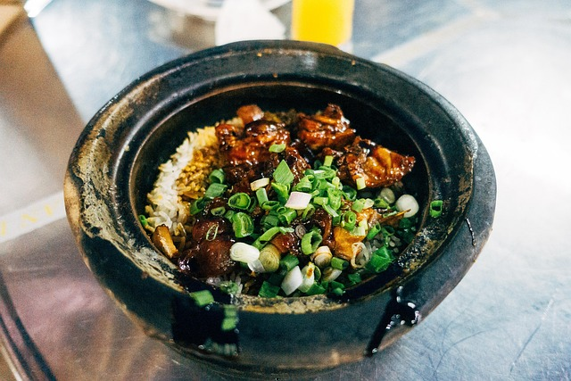
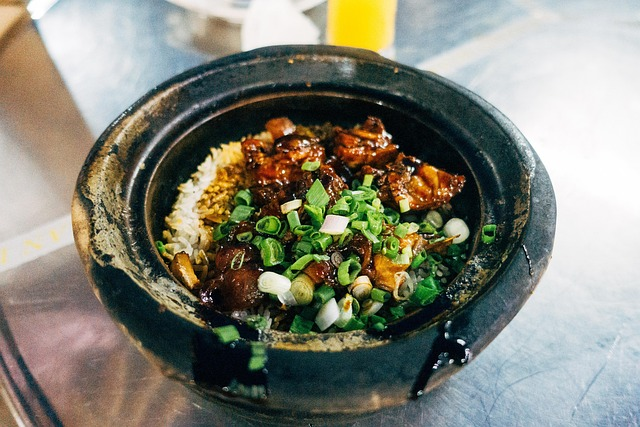

(fig1.9)My favourite comfort food

(fig2.0)My friends and I would all put in money to buy one dish to share, we all loved it.
Red Pork and Rice is a traditional Fijian dish that is loved by many. It consists of marinated pork cooked in a rich, flavorful sauce, served over a bed of fluffy rice. The dish is often accompanied by fresh vegetables and is a staple at family gatherings and celebrations in Fiji. The combination of spices and the tenderness of the pork make it a must-try for anyone visiting the islands. Me personally this dish holds a special place in my heart as it was one of the meals my friends and I would enjoy around the table as we talked about school and stuff.
(fig1.9)My favourite comfort food
(fig2.0)My friends and I would all put in money to buy one dish to share, we all loved it.
